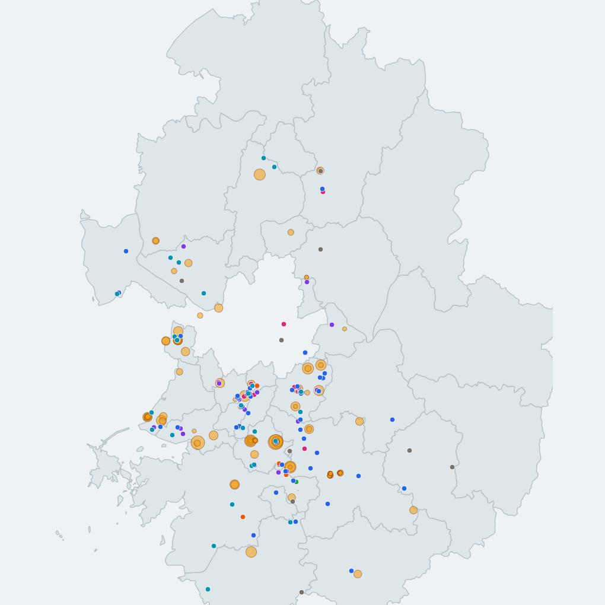
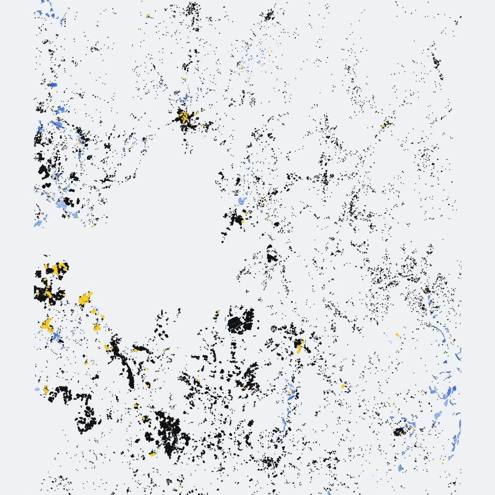

Jeehyun NAM [경기도 방위산업 기업체와 연구장비] 지도 3 · 통계 1
Jeehyun NAM [반지하와 침수흔적도] 지도 2 · 차트 1검색 결과가 없습니다.
✎ 새 분석물은 pictures.html 의 .mapcards 안에
<a class="mapcard" data-cat="…"> 한 덩어리를 추가하면 목록에 붙습니다.
data-cat 은 industry(산업) · housing(주택) ·
decline(도시쇠퇴) · etc(기타) 중 하나이며, 없으면 기타로 들어갑니다.
지도·차트가 들어가는 글은 별도 페이지를 만들어 카드에 링크를 겁니다.